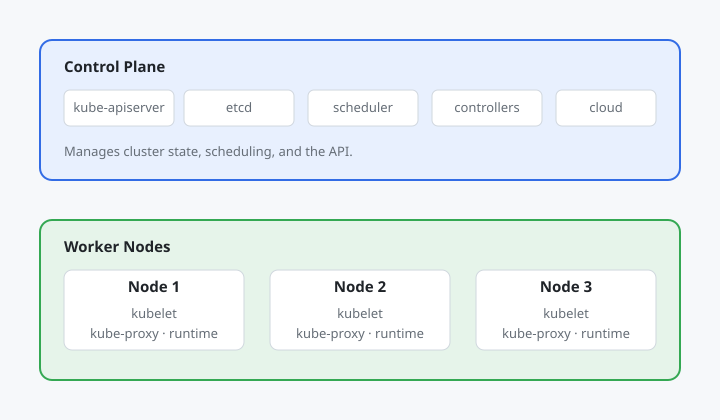
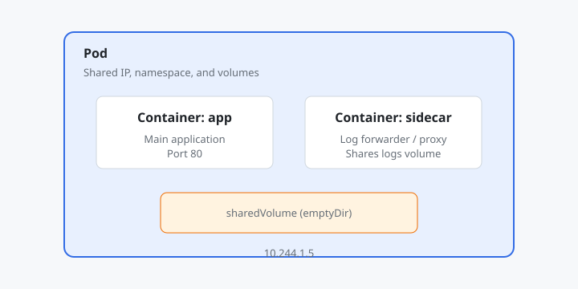
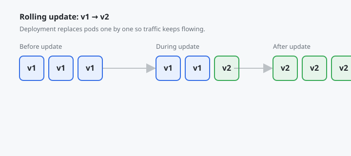
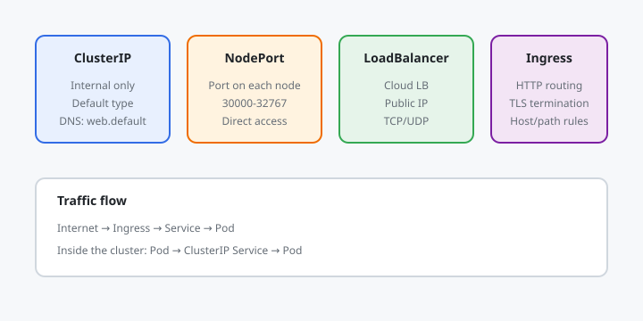

Kubernetes: Pods, Deployments, Services, Helm
Chapter 1
Introduction
Kubernetes is the de facto platform for running containerized applications at scale. It abstracts a pool of machines into a single compute surface, then automates deployment, scaling, networking, and recovery. This tutorial covers the core building blocks: pods, deployments, services, config maps, secrets, and Helm charts.
Before you start
- Comfortable with containers and Docker.
- Basic command-line usage.
- Familiarity with YAML syntax.
What you'll learn
- ✓ Cluster control plane and nodes
- ✓ Pods and multi-container patterns
- ✓ Deployments and rolling updates
- ✓ Services and ingress
- ✓ ConfigMaps and Secrets
- ✓ Helm package management
- ✓ Production patterns and observability
Real-world systems using Kubernetes
- Spotify runs thousands of microservices on Kubernetes, scaling workloads across dozens of clusters.
- Airbnb migrated its data platform to Kubernetes to standardize batch and streaming jobs.
- Samsung uses Kubernetes to manage device firmware update services at global scale.
- Goldman Sachs runs trading and risk workloads on Kubernetes with strict multi-tenancy controls.
- Ticketmaster handles ticket on-sales spikes by autoscaling Kubernetes deployments.
Chapter 2
Cluster Architecture
A Kubernetes cluster has two kinds of machines: control plane nodes that manage the cluster, and worker nodes that run your containers. The control plane schedules pods, monitors health, and exposes the API.

Control plane components manage state; worker nodes run pods.
Control plane components
-
kube-apiserver— the front door for all API requests. -
etcd— distributed key-value store for cluster state. -
kube-scheduler— decides which node runs a new pod. -
kube-controller-manager— runs controllers for nodes, replication, endpoints, and more. -
cloud-controller-manager— talks to cloud providers for load balancers and node lifecycle.
Worker node components
-
kubelet— agent that runs pods assigned to the node. -
kube-proxy— maintains network rules for services. -
container runtime— containerd, CRI-O, or Docker.
# Install a local cluster with minikube or kind minikube start --driver=
docker
kubectl cluster-info
# Or
use kind for a multi-
node local cluster kind create cluster --name dev
kubectl get nodesReal-world note
Shopify runs many small clusters to isolate failure domains. Their SRE teams rely on the control plane's etcd backups and API server audit logs for incident response.
Chapter 3
Pods
A pod is the smallest deployable unit in Kubernetes. It wraps one or more containers that share networking and storage. Most pods run a single container, but sidecar, init, and ambassador patterns use multiple containers.

Containers in a pod share an IP address and can mount the same volumes.
Pod manifest
# pod.yaml
v1
Pod
name: nginx
app: nginx
containers: -
nginx
nginx:1.27
-
80
requests:
"64Mi"
"100m"
memory: "128Mi"
"200m"kubectl apply -f pod.yaml
kubectl get pods
kubectl describe pod
nginx
kubectl logs
nginx
kubectl exec -it
nginx -- /bin/bashMulti-container sidecar pattern
A common production pattern: the main container serves traffic while a sidecar ships logs or handles TLS.
apiVersion: v1
Pod
name: web-with-logger
containers: -
web
myapp:1.0
-
logs
/var/log/app -
fluent-bit
fluent/fluent-bit:3.0
-
logs
/var/log/app
-
logs
{}Real-world note
GitHub uses sidecar containers in Kubernetes for observability, log forwarding, and TLS termination in its internal services.
Chapter 4
Deployments
You rarely create pods directly. A Deployment manages a set of identical pods, handles rolling updates, and can roll back to a previous version. It uses a ReplicaSet under the hood to maintain the desired number of pods.

Deployments replace pods gradually so the service stays available.
Deployment manifest
# deployment.yaml
apps/v1
Deployment
name: web
replicas: 3
type: RollingUpdate
maxSurge: 1
0
matchLabels:
web
metadata:
app: web
containers: -
web
nginx:1.27
-
80
httpGet:
/
80
5
10
httpGet:
/
80
15
20kubectl apply -f deployment.yaml
kubectl get deployments
kubectl get pods -l app=web
kubectl rollout status deployment/web
# Update image and watch rolling update
kubectl set image deployment/web web=
nginx:1.28
kubectl rollout status deployment/web
# Roll back if something breaks
kubectl rollout undo deployment/web
kubectl rollout history deployment/webReal-world note
Netflix deploys hundreds of times per day using Kubernetes Deployments. Their Spinnaker pipelines orchestrate canary analysis before promoting a new version to all pods.
Chapter 5
Services
Services give pods a stable network identity. They abstract pod IP addresses behind a single DNS name and can load balance traffic across replicas. Ingresses expose services to the outside world with HTTP routing.

Service types progress from internal-only to internet-facing ingress.
Service types
-
ClusterIP— internal traffic only, default. -
NodePort— exposes a port on every node. -
LoadBalancer— provisions a cloud load balancer. -
ExternalName— DNS alias to an external service.
ClusterIP service
# service.yaml
v1
Service
name: web
selector:
web
-
80
80
ClusterIPIngress with NGINX
# ingress.yaml
networking.k8s.io/v1
Ingress
name: web
nginx.ingress.kubernetes.io/rewrite-target: /
rules: -
shop.example.com
paths: -
/
Prefix
service:
web
number: 80# Check DNS resolution inside the cluster
kubectl run -it --rm debug --image=busybox:1.36 -- nslookup web
# Port-forward a service to your local machine
kubectl port-forward svc/web 8080:80Real-world note
Reddit uses Kubernetes Ingress controllers for HTTP routing and rate limiting. They split traffic by path and host header across dozens of microservices.
Chapter 6
Config & Secrets
Applications need configuration and credentials. Kubernetes separates these with ConfigMaps for non-sensitive data and Secrets for sensitive data. Mount them as files or environment variables.
ConfigMap
# configmap.yaml
v1
ConfigMap
name: app-config
DATABASE_HOST: "postgres"
"info"
apps/v1
Deployment
name: api
replicas: 2
matchLabels:
api
metadata:
app: api
containers: -
api
api:1.0
-
name: app-config
-
3000Secret
# Create a secret imperatively
kubectl create secret generic db-creds \
--from-literal=password='super-secret' \
--from-literal=user='app'apiVersion: v1
Secret
name: db-creds
Opaque
user: app
super-secret
Mount as environment variables
containers: -
api
api:1.0
-
DB_USER
secretKeyRef:
db-creds
user -
DB_PASSWORD
secretKeyRef:
db-creds
passwordReal-world note
HashiCorp Vault and AWS Secrets Manager are often used instead of native Secrets for rotation, audit logs, and fine-grained access control. The Kubernetes Secret then only holds short-lived tokens.
Chapter 7
Helm
Helm is the package manager for Kubernetes. A Helm chart bundles templates, default values, and metadata so you can install, upgrade, and roll back complex applications with one command.
# Install Helm from brew or https://
helm.sh brew install
helm
# Add a chart repository and install an app
helm repo add bitnami https://charts.bitnami.com/bitnami
helm repo update
helm install my-postgres bitnami/postgresql
# See installed releases
helm list
# Upgrade a release
helm upgrade my-postgres bitnami/postgresql --set auth.postgresPassword=newpassChart structure
mychart/ ├── Chart.yaml
# metadata and dependencies ├── values.yaml
# default configuration ├── templates/
# Kubernetes manifests with Go templates │ ├── deployment.yaml │ ├── service.yaml │ ├── ingress.yaml │ └── _helpers.tpl └── README.mdTemplated deployment
# templates/deployment.yaml apiVersion: apps/v1 kind: Deployment metadata: name: {{ include "mychart.fullname" . }
} spec: replicas: {{ .Values.replicaCount }
} selector: matchLabels: app: {{ include "mychart.name" . }
} template: metadata: labels: app: {{ include "mychart.name" . }
} spec: containers: - name: web image: "{{ .Values.image.repository }
}:{{ .Values.image.tag }
}" ports: - containerPort: {{ .Values.service.port }
}# values.yaml
3
repository: nginx
"1.27"
type: ClusterIP
80
enabled: true
shop.example.comReal-world note
Datadog publishes Helm charts for its agent and cluster monitoring. SRE teams install the chart once and upgrade it across hundreds of clusters with a single values file per environment.
Chapter 8
Real-World Systems
These companies show how Kubernetes is used for scale, resilience, cost optimization, and developer velocity.
Spotify
Spotify runs a large multi-region Kubernetes fleet. They built their own platform, Backstage, on top of it. Kubernetes lets them bin-pack workloads, autoscale on demand, and isolate failures per squad.
Airbnb
Airbnb migrated its monolithic data infrastructure to Kubernetes. They run Spark and streaming jobs as Kubernetes workloads, unifying batch and real-time data processing on one orchestration layer.
Goldman Sachs
Goldman Sachs runs regulated workloads on Kubernetes with strict network policies, pod security standards, and resource quotas. Their platform team uses Operators to automate database and middleware lifecycle.
Ticketmaster
Ticketmaster uses Kubernetes Horizontal Pod Autoscalers to handle sudden traffic spikes during ticket sales. They combine cluster autoscaling with pod autoscaling to keep latency low without over-provisioning.
Reddit's Kubernetes platform runs microservices behind a service mesh. They use canary deployments, circuit breakers, and observability tools to deploy safely hundreds of times per week.
Chapter 9
Capstone: E-Commerce Stack
Deploy a small e-commerce stack on Kubernetes: a frontend web app, an API service, a PostgreSQL database, and an NGINX Ingress. Package everything in a Helm chart and demonstrate rolling updates and rollbacks.
1. What is this project?
You will build a Helm chart for a fictional online store. It includes a frontend Deployment and Service, an API Deployment and Service, a PostgreSQL StatefulSet backed by a PersistentVolumeClaim, a ConfigMap for shared settings, a Secret for database credentials, and an Ingress that routes traffic by path.
2. What it covers?
- Cluster architecture and kubectl workflow.
- Pods, Deployments, Services, and Ingress.
- ConfigMaps and Secrets for configuration.
- StatefulSet for stateful database workloads.
- Helm chart structure and templating.
- Rolling updates, rollbacks, and health probes.
- Real-world packaging of a multi-service app.
3. How it is done?
Step 1: create the chart
helm create shop rm -rf shop/templates/* shop/values.yaml
# Chart structure shop/ ├── Chart.yaml ├── values.yaml └── templates/ ├── _helpers.tpl ├── configmap.yaml ├── secret.yaml ├── postgres.yaml ├── api-deployment.yaml ├── api-service.yaml ├── web-deployment.yaml ├── web-service.yaml └── ingress.yamlStep 2: default values
# values.yaml
image: shop/web:1.0
2
image: shop/api:1.0
2
image: postgres:16
5Gi
shop
changeme
shopdb
host: shop.local
trueStep 3: PostgreSQL StatefulSet
# templates/postgres.yaml apiVersion: apps/v1 kind: StatefulSet metadata: name: {{ include "shop.fullname" . }
}-postgres spec: serviceName: {{ include "shop.fullname" . }
}-postgres replicas: 1 selector: matchLabels: app: postgres template: metadata: labels: app: postgres spec: containers: - name: postgres image: {{ .Values.database.image }
} envFrom: - secretRef: name: {{ include "shop.fullname" . }
}-db-creds volumeMounts: - name: data mountPath: /var/lib/postgresql/data volumeClaimTemplates: - metadata: name: data spec: accessModes: ["ReadWriteOnce"]
resources: requests: storage: {{ .Values.database.storage }
}Step 4: API and web deployments
# templates/api-deployment.yaml apiVersion: apps/v1 kind: Deployment metadata: name: {{ include "shop.fullname" . }
}-api spec: replicas: {{ .Values.api.replicas }
} selector: matchLabels: app: api template: metadata: labels: app: api spec: containers: - name: api image: {{ .Values.api.image }
} ports: - containerPort: 3000 envFrom: - configMapRef: name: {{ include "shop.fullname" . }
}-config - secretRef: name: {{ include "shop.fullname" . }
}-db-creds readinessProbe: httpGet: path: /health port: 3000 livenessProbe: httpGet: path: /health port: 3000Step 5: ConfigMap and Secret
# templates/configmap.yaml apiVersion: v1 kind: ConfigMap metadata: name: {{ include "shop.fullname" . }
}-config data: DB_HOST: {{ include "shop.fullname" . }
}-postgres DB_NAME: {{ .Values.database.name }
} --- # templates/secret.yaml apiVersion: v1 kind: Secret metadata: name: {{ include "shop.fullname" . }
}-db-creds type: Opaque stringData: DB_USER: {{ .Values.database.user }
} DB_PASSWORD: {{ .Values.database.password }
}Step 6: Service and Ingress
# templates/web-service.yaml apiVersion: v1 kind: Service metadata: name: {{ include "shop.fullname" . }
}-web spec: selector: app: web ports: - port: 80 targetPort: 80 --- # templates/ingress.yaml apiVersion: networking.k8s.io/v1 kind: Ingress metadata: name: {{ include "shop.fullname" . }
}-ingress annotations: nginx.ingress.kubernetes.io/rewrite-target: / spec: rules: - host: {{ .Values.ingress.host }
} http: paths: - path: /api pathType: Prefix backend: service: name: {{ include "shop.fullname" . }
}-api port: number: 80 - path: / pathType: Prefix backend: service: name: {{ include "shop.fullname" . }
}-web port: number: 80Step 7: install and upgrade
# Install the chart
helm install my-shop ./shop
# Verify everything is running
kubectl get pods,svc,ingress
# Upgrade to a new web image
helm upgrade my-shop ./shop --set web.image=shop/web:1.1
kubectl rollout status deployment/my-shop-web
# Simulate a bad deploy and roll back
helm upgrade my-shop ./shop --set web.image=shop/web:broken
helm rollback my-shop 1
# Clean up
helm uninstall my-shop4. What did we learn from this capstone project?
- Kubernetes separates concerns: compute (Deployments), networking (Services), storage (PVCs), and configuration (ConfigMaps/Secrets).
- Helm makes multi-service apps repeatable across environments.
- StatefulSets protect data with stable network identity and ordered pod management.
- Health probes keep services reliable during updates.
- Rolling updates and rollbacks reduce risk when shipping new versions.
- Ingress unifies external routing by host and path.
5. How can I enhance this project in the future?
- Add Horizontal Pod Autoscaler for web and API based on CPU.
- Use cert-manager with Let's Encrypt for TLS on the Ingress.
- Replace the hand-written Secret with external-secrets or Vault integration.
- Add Prometheus metrics and Grafana dashboards for the API.
- Implement a CI pipeline with helm lint, helm test, and kubectl dry-run.
- Introduce a service mesh like Istio or Linkerd for mTLS and traffic shifting.
- Package the chart in a Helm repository and version it with Git tags.
Checkpoint
Install the Helm chart, confirm the web and API pods are running, curl the Ingress endpoint, upgrade the web image, verify the rolling update succeeds, then roll back and confirm the previous version is restored.